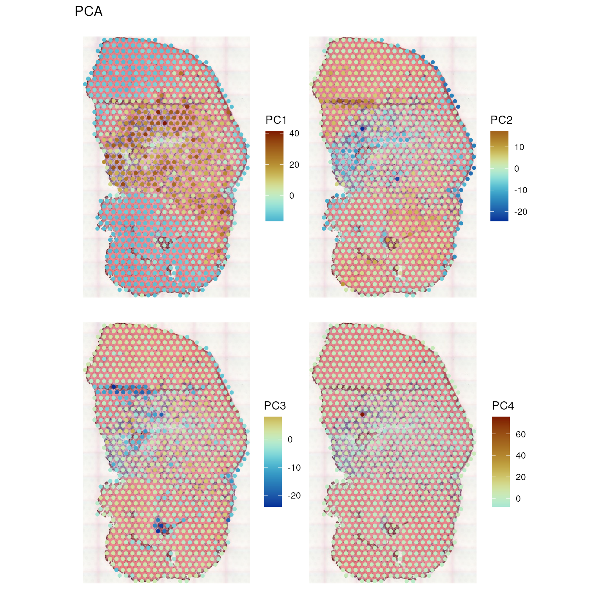

Exploratory spatial data analysis with Voyager
Lambda Moses
dlu2@caltech.eduLior Pachter
lpachter@caltech.edu2024-03-04
Source:vignettes/voyager.Rmd
voyager.RmdThe following R packages are used in this workshop, which are all on CRAN or Bioconductor. Bioconductor 3.19 (devel) is used in the workshop.
library(SpatialFeatureExperiment)
library(SingleCellExperiment)
library(Voyager)
library(SFEData)
library(scran)
library(scater)
library(ggplot2)
library(rjson)
library(Matrix)
library(sf)
library(scales)
library(patchwork)
library(BiocParallel)
library(tibble)
library(tidyr)
library(scico)
library(pheatmap)
library(BiocNeighbors)
library(BiocSingular)
library(bluster)
theme_set(theme_bw())Part 2: Voyager ESDA

10X Visium
As Visium from 10X Genomics is currently the most popular spatial transcriptomics technology, this workshop uses a Visium dataset.

In Visium, capture sequences with spot barcode, unique molecule identifier (UMI), and polyT to capture poly-adenylated mRNAs are printed in a hexagonal array on a glass slide. Each spot barcode has a known location, and the spots are 55 \(\mu m\) in diameter and 100 \(\mu m\) apart center to center. As the spots are much larger than most types of cells, Visium does not have single cell resolution. Tissue is mounted on each of the 4 capture areas on the slide, and each capture area has 4992 spots. The spots capture the transcripts from the tissue, which are then reverse transcribed, amplified, and sequenced.

Space Ranger is the official software to align the sequencing reads to the genome and quantify the UMIs in each spot for each gene. Spatial Ranger also takes in a histology image of the capture area, with which it determines which spots are in tissue. The user can also manually determine which spots are in tissue in the Loupe Browser.
Dataset
The dataset used in this vignette is from the paper Large-scale
integration of single-cell transcriptomic data captures transitional
progenitor states in mouse skeletal muscle regeneration (McKellar et al. 2021). Notexin was injected
into the tibialis anterior muscle of mice to induce injury, and the
healing muscle was collected 2, 5, and 7 days post injury for Visium
analysis. The dataset in this vignette is from the timepoint at day 2.
The vignette starts with a SpatialFeatureExperiment (SFE)
object.
The gene count matrix was directly downloaded from
GEO. All 4992 spots, whether in tissue or not, are included. The
H&E image was used for nuclei and myofiber segmentation. A subset of
nuclei from randomly selected regions from all 3 timepoints were
manually annotated to train a StarDist model to segment the rest of the
nuclei, and the myofibers were all manually segmented. The tissue
boundary was found by thresholding in OpenCV, and small polygons were
removed as they are likely to be debris. Spot polygons were constructed
with the spot centroid coordinates and diameter in the Space Ranger
output. The in_tissue column in colData
indicates which spot polygons intersect the tissue polygons, and is
based on st_intersects().
Tissue boundary, nuclei, myofiber, and Visium spot polygons are
stored as sf data frames in the SFE object. See the
vignette of SpatialFeatureExperiment for more details
on the structure of the SFE object. The SFE object of this dataset is
provided in the SFEData package; we begin by downloading
the data and loading it into R.
(sfe <- McKellarMuscleData("full"))
#> see ?SFEData and browseVignettes('SFEData') for documentation
#> loading from cache
#> class: SpatialFeatureExperiment
#> dim: 15123 4992
#> metadata(0):
#> assays(1): counts
#> rownames(15123): ENSMUSG00000025902 ENSMUSG00000096126 ...
#> ENSMUSG00000064368 ENSMUSG00000064370
#> rowData names(6): Ensembl symbol ... vars cv2
#> colnames(4992): AAACAACGAATAGTTC AAACAAGTATCTCCCA ... TTGTTTGTATTACACG
#> TTGTTTGTGTAAATTC
#> colData names(12): barcode col ... prop_mito in_tissue
#> reducedDimNames(0):
#> mainExpName: NULL
#> altExpNames(0):
#> spatialCoords names(2) : imageX imageY
#> imgData names(1): sample_id
#>
#> unit: full_res_image_pixels
#> Geometries:
#> colGeometries: spotPoly (POLYGON)
#> annotGeometries: tissueBoundary (POLYGON), myofiber_full (POLYGON), myofiber_simplified (POLYGON), nuclei (POLYGON), nuclei_centroid (POINT)
#>
#> Graphs:
#> Vis5A:The H&E image of this section:

The image can be added to the SFE object and plotted behind the geometries, and needs to be flipped to align to the spots because the origin is at the top left for the image but bottom left for geometries.
sfe <- addImg(sfe, imageSource = "tissue_lowres_5a.jpeg", sample_id = "Vis5A",
image_id = "lowres",
scale_fct = 1024/22208)
sfe <- mirrorImg(sfe, sample_id = "Vis5A", image_id = "lowres")Exploratory data analysis
Spots in tissue
While the example dataset has all Visium spots whether on tissue or not, only spots that intersect tissue are used for further analyses.
names(colData(sfe))
#> [1] "barcode" "col" "row" "x" "y" "dia"
#> [7] "tissue" "sample_id" "nCounts" "nGenes" "prop_mito" "in_tissue"Total UMI counts (nCounts), number of genes detected per
spot (nGenes), and the proportion of mitochondrially
encoded counts (prop_mito) have been precomputed and are in
colData(sfe). The plotSpatialFeature()
function can be used to visualize various attributes in space: the
expression of any gene, colData values, and geometry
attributes in colGeometry and annotGeometry.
The Visium spots are plotted as polygons reflecting their actual size
relative to the tissue, rather than as points, as is the case in other
packages that plot Visium data. The plotting of geometries is being
performed under the hood with geom_sf.
The tissue boundary was found by thresholding the H&E image and
removing small polygons that are most likely debris. The
in_tissue column of colData(sfe) indicates
which Visium spot polygon intersects the tissue polygon; this can be
found with SpatialFeatureExperiment::annotPred().
We demonstrate the use of scran (Lun, Bach, and Marioni 2016) for normalization
below, although we note that it is not necessarily the best approach to
normalizing spatial transcriptomics data. The problem of when and how to
normalize spatial transcriptomics data is non-trivial because, as the
nCounts plot in space shows above, spatial autocorrelation
is evident. Furthermore, in Visium, reverse transcription occurs in situ
on the spots, but PCR amplification occurs after the cDNA is dissociated
from the spots. Artifacts may be subsequently introduced from the
amplification step, and these would not be associated with spatial
origin. Spatial artifacts may arise from the diffusion of transcripts
and tissue permeablization. However, given how the total counts seem to
correspond to histological regions, the total counts may have a
biological component and hence should not be treated as a technical
artifact to be normalized away as in scRNA-seq data normalization
methods. In other words, the issue of normalization for spatial
transcriptomics data, and Visium in particular, is complex and is
currently unsolved.
sfe_tissue <- sfe[,colData(sfe)$in_tissue]
sfe_tissue <- sfe_tissue[rowSums(counts(sfe_tissue)) > 0,]
#clusters <- quickCluster(sfe_tissue)
#sfe_tissue <- computeSumFactors(sfe_tissue, clusters=clusters)
#sfe_tissue <- sfe_tissue[, sizeFactors(sfe_tissue) > 0]
sfe_tissue <- logNormCounts(sfe_tissue)Myofiber and nuclei segmentation polygons are available in this
dataset in the annotGeometries field. Myofibers were
manually segmented, and nuclei were segmented with StarDist
trained with a manually segmented subset.
annotGeometryNames(sfe_tissue)
#> [1] "tissueBoundary" "myofiber_full" "myofiber_simplified"
#> [4] "nuclei" "nuclei_centroid"From myofibers and nuclei to Visium spots
The plotSpatialFeature() function can also be used to
plot attributes of geometries, i.e. the non-geometry columns in the
sf data frames in the rowGeometries,
colGeometries, or annotGeometries fields of
the SFE object.
The myofiber polygons from annotGeometries can be
plotted as shown below, colored by cross section area as observed in the
tissue section. The aes_use argument is set to
color rather than fill (default for polygons)
to only plot the Visium spot outlines to make the myofiber polygons more
visible. The fill argument is set to NA to
make the Visium spots look hollow, and the size argument
controls the thickness of the outlines. The annot_aes
argument specifies which column in the annotGeometry to use
to specify the values of an aesthstic, just like aes in
ggplot2 (aes_string to be precise, since
tidyeval is not used here). The annot_fixed
argument (not used here) can set the fixed size, alpha, color, and etc.
for the annotGeometry.
plotSpatialFeature(sfe_tissue, features = "nCounts",
colGeometryName = "spotPoly",
annotGeometryName = "myofiber_simplified",
aes_use = "color", linewidth = 0.5, fill = NA,
annot_aes = list(fill = "area"))The larger myofibers seem to have fewer total counts, possibly because the larger size of these myofibers dilutes the transcripts. This hints at the need for a normalization procedure.
With SpatialFeatureExperiment, we can find the number of
myofibers and nuclei that intersect each Visium spot. The predicate can
be anything
implemented in sf, so for example, the number of nuclei
fully covered by each Visium spot can also be found. The default
predicate is st_intersects().
colData(sfe_tissue)$n_myofibers <-
annotNPred(sfe_tissue, colGeometryName = "spotPoly",
annotGeometryName = "myofiber_simplified")
plotSpatialFeature(sfe_tissue, features = "n_myofibers",
colGeometryName = "spotPoly", image = "lowres", color = "black",
linewidth = 0.1)There is no one-to-one mapping between Visium spots and myofibers.
However, we can relate attributes of myofibers to gene expression
detected at the Visium spots. One way to do so is to summarize the
attributes of all myofibers that intersect (or choose another better
predicate implemented in sf) each spot, such as to
calculate the mean, median, or sum. This can be done with the
annotSummary() function in
SpatialFeatureExperiment. The default predicate is
st_intersects(), and the default summary function is
mean().
colData(sfe_tissue)$mean_myofiber_area <-
annotSummary(sfe_tissue, "spotPoly", "myofiber_simplified",
annotColNames = "area")[,1] # it always returns a data frame
# The gray spots don't intersect any myofiber
plotSpatialFeature(sfe_tissue, "mean_myofiber_area", "spotPoly", image = "lowres",
color = "black", linewidth = 0.1)This reveals the relationship between the mean area of myofibers intersecting each Visium spot and other aspects of the spots, such as total counts and gene expression.
The NAs (gray) designate spots not intersecting any myofibers, e.g. those in the inflammatory region.
The nGenes vs. nCounts plot is a standard QC plot in scRNA-seq, but here we see two mysterious branches and two clusters in the nGenes vs. nCounts plot and the proportion of mitochondrial counts vs. nCounts plot. The two branches or clusters seem to be related to myofiber size.
plotColData(sfe_tissue, x = "nCounts", y = "nGenes", colour_by = "mean_myofiber_area")
plotColData(sfe_tissue, x = "nCounts", y = "prop_mito", colour_by = "mean_myofiber_area")
Exercises
- Use the
annotNPred()function to find the number of nuclei intersecting each Visium spot. The nuclei segmentation polygons are in theannotGeometrycalled “nuclei”. - Color the Visium spots with the number of nuclei. Which histological region tends to have more nuclei per Visium spot?
- Does the number of nuclei per spot correlate with nCounts?
Plot gene expression in space
Marker genes: Myh7 (Type I, slow twitch, aerobic), Myh2 (Type IIa, fast twitch, somewhat aerobic), Myh4 (Type IIb, fast twitch, anareobic), Myh1 (Type IIx, fast twitch, anaerobic), from this protocol (Wang, Yue, and Kuang 2017)
markers <- c(I = "Myh7", IIa = "Myh2", IIb = "Myh4", IIx = "Myh1")We first examine the Type I myofibers. This is a fast twitch muscle,
so we don’t expect many slow twitch Type I myofibers. Row names in
sfe_tissue are Ensembl IDs in order to avoid ambiguity as
sometimes multiple Ensembl IDs have the same gene symbol and some genes
have aliases. However, gene symbols are shorter and more human readable
than Ensembl IDs, and are better suited to display on plots. In the
plotSpatialFeature() function and other functions in
Voyager, even when the row names are recorded as Ensembl
IDs, the features argument can take gene symbols if when a
column in rowData(sfe) that has the gene symbols are
supplied in the swap_rownames argument. All function in
Voyager that queries genes has the
swap_rownames argument.
plotSpatialFeature(sfe_tissue, "Myh2", "spotPoly",
annotGeometryName = "myofiber_simplified",
annot_aes = list(fill = "area"), swap_rownames = "symbol",
exprs_values = "logcounts", aes_use = "color", linewidth = 0.5,
fill = NA)Exercises
- The
exprs_valuesargument specifies the assay to use, which is by default “logcounts”, i.e. the log normalized data. This default may or may not be suitable in practice given that total UMI counts may have biological relevance in spatial data. Plot one of the marker genes above, but with the “counts” assay. - Look up the documentation of
plotSpatialFeature(). Try plotting the Visium spots as filled circles that are partially transparent.
Spatial neighborhood graphs
A spatial neighborhood graph is required to compute spatial
dependency metrics such as Moran’s I and Geary’s C. The
SpatialFeatureExperiment package wraps methods in
spdep to find spatial neighborhood graphs, which are stored
within the SFE object (see spdep documentation for
gabrielneigh(), knearneigh(),
poly2nb(), and tri2nb()). The
Voyager package then uses these graphs for spatial
dependency analyses, again based on spdep in this first
version, but methods from other geospatial packages, some of which also
use the spatial neighborhood graphs, may be added later.
For Visium, where the spots are in a hexagonal grid, the spatial
neighborhood graph is straightforward. However, for spatial technologies
with single cell resolution, e.g. MERFISH, different methods can be used
to find the spatial neighborhood graph. In this example, the method
“poly2nb” was used for myofibers, and it identifies myofiber polygons
that physically touch each other. zero.policy = TRUE will
allow for singletons, i.e. nodes without neighbors in the graph; in the
inflamed region, there are more singletons. We have not yet benchmarked
spatial neighborhood construction methods to determine which is the
“best” for different technologies; the particular method used here is
for demonstration purposes and may not be the best in practice:
colGraph(sfe_tissue, "visium") <- findVisiumGraph(sfe_tissue)
annotGraph(sfe_tissue, "myofiber_poly2nb") <-
findSpatialNeighbors(sfe_tissue, type = "myofiber_simplified", MARGIN = 3,
method = "poly2nb", zero.policy = TRUE)The plotColGraph() function plots the graph in space
associated with a colGeometry, along with the geometry of
interest.
plotColGraph(sfe_tissue, colGraphName = "visium", colGeometryName = "spotPoly") +
theme_void()
Similarly, the plotAnnotGraph() function plots the graph
associated with an annotGeometry, along with the geometry
of interest.
plotAnnotGraph(sfe_tissue, annotGraphName = "myofiber_poly2nb",
annotGeometryName = "myofiber_simplified") + theme_void()There is no plotRowGraph yet since we haven’t worked
with a dataset where spatial graphs related to genes are relevant,
although the SFE object supports row graphs.
Exploratory spatial data analysis
All spatial autocorrelation metrics in this package can be computed
directly on a vector or a matrix rather than an SFE object. The user
interface emulates those of dimension reductions in the
scater package (e.g. calculateUMAP() that
takes in a matrix or SCE object and returns a matrix, and
runUMAP() that takes in an SCE object and adds the results
to the reducedDims field of the SCE object). So
calculate* functions take in a matrix or an SFE object and
directly return the results (format of the results depends on the
structure of the results), while run* functions take in an
SFE object and add the results to the object. In addition,
colData* functions compute the metrics for numeric
variables in colData. colGeometry* functions
compute the metrics for numeric columns in a colGeometry.
annotGeometry* functions compute the metrics for numeric
columns in a annotGeometry.
Univariate global
Voyager supports many univariate global spatial
autocorrelation implemented in spdep for ESDA: Moran’s I
and Geary’s C, permutation testing for Moran’s I and Geary’s C, Moran
plot, and correlograms. In addition, beyond spdep,
Voyager can cluster Moran plots and correlograms. Plotting
functions taking in SFE objects are implemented to plot the results with
ggplot2 and with more customization options than
spdep plotting functions. The functions
calculateUnivariate() (can take data outside SFE objects),
runUnivariate() (for gene expression),
colDataUnivariate(), colGeometryUnivariate(),
annotGeometryUnivariate(), and
reducedDimUnivariate() compute univariate spatial
statistics for different fields of the SFE object, and they all have the
same arguments except for arguments specific to the field of the SFE
object. The argument type, which indicates the
corresponding function names in spdep, determines which
spatial statistics are computed.
All univariate global methods in Voyager are listed
here:
listSFEMethods(variate = "uni", scope = "global")
#> name description
#> 1 moran Moran's I
#> 2 geary Geary's C
#> 3 moran.mc Moran's I with permutation testing
#> 4 geary.mc Geary's C with permutation testing
#> 5 sp.mantel.mc Mantel-Hubert spatial general cross product statistic
#> 6 moran.test Moran's I test
#> 7 geary.test Geary's C test
#> 8 globalG.test Global G test
#> 9 sp.correlogram Correlogram
#> 10 variogram Variogram with model
#> 11 variogram_map Variogram mapWhen calling calculate*variate() or
run*variate(), the type (2nd) argument takes a
string that matches an entry in the name column in the data
frame returned by listSFEMethods().
To demonstrate spatial autocorrelation in gene expression, top highly
variable genes (HVGs) are used. The HVGs are found with the
scran method.
dec <- modelGeneVar(sfe_tissue)
hvgs <- getTopHVGs(dec, n = 50)A global statistic yields one result for the entire dataset.
Moran’s I
As a reference, Pearson correlation is defined as
\[ \rho_{X,Y} = \frac{\sum_{i=1}^n\sum_{j=1}^n (x_i - \bar x)(y_i - \bar y)}{\sqrt{\sum_{i=1}^n (x_i - \bar x)^2}\sqrt{\sum_{i=1}^n (y_i - \bar y)^2}}. \]
There are several ways to quantify spatial autocorrelation, the most common of which is Moran’s I (Moran 1950):
\[ I = \frac{n}{\sum_{i=1}^n \sum_{j=1}^n w_{ij}} \frac{\sum_{i=1}^n \sum_{j=1}^n w_{ij} (x_i - \bar{x})(x_j - \bar{x})}{\sum_{i=1}^n (x_i - \bar{x})^2}, \]
where \(n\) is the number of spots
or locations, \(i\) and \(j\) are different locations, or spots in
the Visium context, \(x\) and \(y\) are variables with values at each
location, and \(w_{ij}\) is a spatial
weight, which can be inversely proportional to distance between spots or
an indicator of whether two spots are neighbors, subject to various
definitions of neighborhood and whether to normalize the number of
neighbors. The spdep
package uses the neighborhood.
Moran’s I is analogous to the Pearson correlation between the value at each location and the average value at its neighbors (but not identical, see (Lee 2001)). Just like Pearson correlation, Moran’s I is generally bound between -1 and 1, where positive value indicates positive spatial autocorrelation, i.e. nearby values tend to be more similar, and negative value indicates negative spatial autocorrelation, i.e. nearby values tend to be more dissimilar.
Upon visual inspection earlier in the workshop, total UMI counts per
spot (nCounts) seem to have spatial autocorrelation. For numeric columns
of colData(sfe), all univariate methods can be called with
colDataUnivariate(). Here we compute Moran’s I for nCounts
and nGenes:
sfe_tissue <- colDataUnivariate(sfe_tissue, type = "moran",
features = c("nCounts", "nGenes"),
colGraphName = "visium")
colFeatureData(sfe_tissue)[c("nCounts", "nGenes"),]
#> DataFrame with 2 rows and 2 columns
#> moran_Vis5A K_Vis5A
#> <numeric> <numeric>
#> nCounts 0.528705 3.00082
#> nGenes 0.384028 3.88036For colData, the results are added to
colFeatureData(sfe), and features for which Moran’s I is
not calculated have NA. The column names of featureData
distinguishes between different samples (there’s only one sample in this
dataset), and are parsed by plotting functions. Here the first column is
the Moran’s I value, which indicates moderate positive spatial
autocorrelation for both nCounts and nGenes. The second column is
kurtosis of the data.
Compute Moran’s I for attributes of geometries: Here “area” is the area of the cross section of each myofiber as seen in this tissue section and “eccentricity” is the eccentricity of the ellipse fitted to each myofiber.
# Remember zero.policy = TRUE since there're singletons
sfe_tissue <- annotGeometryUnivariate(sfe_tissue, type = "moran",
features = c("area", "eccentricity"),
annotGeometryName = "myofiber_simplified",
annotGraphName = "myofiber_poly2nb",
zero.policy = TRUE)
attr(annotGeometry(sfe_tissue, "myofiber_simplified"), "featureData")[c("area", "eccentricity"),]
#> DataFrame with 2 rows and 2 columns
#> moran_Vis5A K_Vis5A
#> <numeric> <numeric>
#> area 0.327888 4.95675
#> eccentricity 0.110938 3.26913For a non-geometry column in a colGeometry,
colGeometryUnivariate() is like
annotGeometryUnivariate() here, but none of the
colGeometries in this dataset has extra columns.
For gene expression, the logcounts assay is used by
default (use the exprs_values argument to change the
assay), though this may or may not be best practice. If the metrics are
computed for a large number of features, parallel computing is
supported, with BiocParallel,
with the BPPARAM argument.
sfe_tissue <- runUnivariate(sfe_tissue, type = "moran", features = hvgs,
colGraphName = "visium", BPPARAM = SerialParam())
rowData(sfe_tissue)[head(hvgs),c("moran_Vis5A", "K_Vis5A", "symbol")]
#> DataFrame with 6 rows and 3 columns
#> moran_Vis5A K_Vis5A symbol
#> <numeric> <numeric> <character>
#> ENSMUSG00000029304 0.734937 1.63516 Spp1
#> ENSMUSG00000050708 0.665563 1.81841 Ftl1
#> ENSMUSG00000050335 0.741474 1.68098 Lgals3
#> ENSMUSG00000021939 0.708362 1.86896 Ctsb
#> ENSMUSG00000021190 0.659916 1.66838 Lgmn
#> ENSMUSG00000018893 0.675840 1.82510 MbAs Moran’s I is very commonly used,
runMoransI(sfe_tissue, features = hvgs) is equivalent to
runUnivariate(sfe_tissue, type = "moran", features = hvgs).
Exercises
- Use
listSFEMethods()to find the “name” of Geary’s C (Geary 1954). This name should be used in thetypeargument inrunUnivariate(). - Compute Geary’s C on the highly variable genes, and show the results. Interpretation of Geary’s C: a value below 1 indicates positive spatial autocorrelation, while a value above 1 indicates negative spatial autocorrelation.
Further reading
- Spatial transcriptomics data is usually much larger than the typical geospatial dataset back in the 1950s when Moran’s I and Geary’s C were devised. See (Luo, Griffith, and Wu 2019) for asymptotic properties of Moran’s I for large datasets with normal and skewed distributions.
- The negative binomial distribution is often used to model transcriptomics data due to bursts in transcription, although the Poisson distribution is sometimes used instead to simplify the math. See (Griffith and Haining 2006) for a consideration of the Poisson distribution in spatial analyses.
- Moran’s I is not exactly the same as Pearson correlation between the values themselves and the spatially smoothed values. The bounds of Moran’s I depend on the spatial neighborhood graph. Usually the upper bound is around 1, while the lower bound is closer to -0.5 than -1. See (Jong, Sprenger, and Veen 1984) for a derivation of extreme values of Moran’s I and Geary’s C.
- Spatial autocorrelation decays at different length scales for different features, and the correlogram is one way to find the length scales. These are the vignettes that use correlograms. Also see this vignette on Moran’s I flipping signs at different length scales.
Univariate local
Local statistics yield a result at each location rather than the
whole dataset, while global statistics may obscure local heterogeneity.
See (Fotheringham 2009) for an interesting
discussion of relationships between global and local spatial statistics.
Local statistics are stored in the localResults field of
the SFE object, which can be accessed by the localResult()
or localResults() functions in the
SpatialFeatureExperiment package.
All univariate local methods in Voyager are listed
here:
listSFEMethods(variate = "uni", scope = "local")
#> name description
#> 1 localmoran Local Moran's I
#> 2 localmoran_perm Local Moran's I permutation testing
#> 3 localC Local Geary's C
#> 4 localC_perm Local Geary's C permutation testing
#> 5 localG Getis-Ord Gi(*)
#> 6 localG_perm Getis-Ord Gi(*) with permutation testing
#> 7 LOSH Local spatial heteroscedasticity
#> 8 LOSH.mc Local spatial heteroscedasticity permutation testing
#> 9 LOSH.cs Local spatial heteroscedasticity Chi-square test
#> 10 moran.plot Moran scatter plotLocal Moran’s I
To recap, global Moran’s I is defined as
\[ I = \frac{n}{\sum_{i=1}^n \sum_{j=1}^n w_{ij}} \frac{\sum_{i=1}^n \sum_{j=1}^n w_{ij} (x_i - \bar{x})(x_j - \bar{x})}{\sum_{i=1}^n (x_i - \bar{x})^2}. \]
Local Moran’s I (Anselin 1995) is defined as
\[ I_i = (n-1)\frac{(x_i - \bar{x})\sum_{j=1}^n w_{ij} (x_j - \bar{x})}{\sum_{i=1}^n (x_i - \bar{x})^2}. \]
It’s similar to global Moran’s I, but the values at locations \(i\) are not summed and there’s no normalization by the sum of spatial weights. Local Moran’s I has been used in spatial transcriptomics in the MERINGUE package (Miller et al. 2021). Here we compute local Moran’s I for the gene Myh2.
sfe_tissue <- runUnivariate(sfe_tissue, type = "localmoran", features = "Myh2",
colGraphName = "visium", swap_rownames = "symbol")It is useful to plot the log normalized Myh2 gene expression as context to interpret the local results:
plotSpatialFeature(sfe_tissue, features = "Myh2", colGeometryName = "spotPoly",
swap_rownames = "symbol", image_id = "lowres", color = "black",
linewidth = 0.1)Any local spatial results can be plotted with
plotLocalResults(), which is similar to
plotSpatialFeature(). Here a divergent palette is used
because Moran’s I has a sensible center at 0 (actually the expected
value of Moran’s I is -1/(n-1) when the mean is unknown, but it’s very
close to 0 as n is typically large in spatial -omics).
plotLocalResult(sfe_tissue, "localmoran", features = "Myh2",
colGeometryName = "spotPoly", divergent = TRUE,
diverge_center = 0, image_id = "lowres",
swap_rownames = "symbol", color = "black",
linewidth = 0.1)We see that myofiber regions with higher Myh2 expression also have stronger spatial autocorrelation, while the injury site locally has some negative spatial autocorrelation.
The results are stored in the localResults field in the
SFE object, with getters and setters analogous to
reducedDims, but the name of the local method and the
feature/gene for which the local method was run need to be specified as
well.
lr <- localResult(sfe_tissue, type = "localmoran", feature = "Myh2",
swap_rownames = "symbol")
head(lr)
#> Ii E.Ii Var.Ii Z.Ii Pr(z != E(Ii))
#> AAACATTTCCCGGATT 2.12545883 -0.0012237995 0.37891181 3.45488511 5.505274e-04
#> AAACCTAAGCAGCCGG 3.33088903 -0.0038553468 0.59334776 4.32920244 1.496503e-05
#> AAACGAGACGGTTGAT 0.30430735 -0.0009817045 0.15152269 0.78428227 4.328745e-01
#> AAACGGGCGTACGGGT 4.69775712 -0.0063342069 0.97242481 4.77032239 1.839313e-06
#> AAACTCGGTTCGCAAT 0.01991573 -0.0002817611 0.04351933 0.09681804 9.228709e-01
#> AAACTGCTGGCTCCAA 0.55285063 -0.0009817045 0.15152269 1.42278566 1.547983e-01
#> mean median pysal -log10p -log10p_adj
#> AAACATTTCCCGGATT High-High High-High High-High 3.25922109 2.657161
#> AAACCTAAGCAGCCGG High-High High-High High-High 4.82492235 3.979824
#> AAACGAGACGGTTGAT Low-Low Low-Low Low-Low 0.36363800 0.000000
#> AAACGGGCGTACGGGT High-High High-High High-High 5.73534434 4.890246
#> AAACTCGGTTCGCAAT High-High High-High High-High 0.03485905 0.000000
#> AAACTGCTGGCTCCAA Low-Low Low-Low Low-Low 0.81023381 0.000000It is interesting to see how spatial autocorrelation relates to gene expression level, much as finding how variance relates to mean in the expression of each gene, which usually indicates overdispersion compared to Poisson in scRNA-seq and Visium data:
df <- data.frame(myh2 = logcounts(sfe_tissue)[rowData(sfe_tissue)$symbol == "Myh2",],
Ii = localResult(sfe_tissue, "localmoran", "Myh2",
swap_rownames = "symbol")[,"Ii"])
ggplot(df, aes(myh2, Ii)) + geom_point(alpha = 0.3) +
geom_vline(xintercept = mean(df$myh2), linetype = 2, color = "gray") +
geom_hline(yintercept = 0, linetype = 2, color = "gray") +
labs(x = "Myh2 (log counts)", y = "localmoran")
For this gene, Visium spots with higher expression also tend to have higher local Moran’s I, but this may or may not apply to other genes. The vertical dashed line marks the mean gene expression; note the subtraction of mean in the expression for global and local Moran’s I, leading spots close to mean to have local Moran’s I close to 0.
Local spatial analyses often return a matrix or data frame. The
plotLocalResult() function has a default column for each
local spatial method, but other columns can be plotted as well. Use the
localResultAttrs() function to see which columns are
present, and use the attribute argument to specify which
column to plot.
localResultAttrs(sfe_tissue, "localmoran", "Myh2", swap_rownames = "symbol")
#> [1] "Ii" "E.Ii" "Var.Ii" "Z.Ii"
#> [5] "Pr(z != E(Ii))" "mean" "median" "pysal"
#> [9] "-log10p" "-log10p_adj"Some local spatial methods return p-values at each location, in a
column with name like Pr(z != E(Ii)), where the test is two
sided (default, can be changed with the alternative
argument in runUnivariate() which is passed to the relevant
underlying function in spdep). Negative log of the p-value
is computed to facilitate visualization (smaller or more significant
p-values are plotted as higher values), and the p-value is corrected for
multiple hypothesis testing with p.adjustSP() in
spdep, where the number of tests is the number of neighbors
of each location rather than the total number of locations
(-log10p_adj).
plotLocalResult(sfe_tissue, "localmoran", features = "Myh2",
colGeometryName = "spotPoly", attribute = "-log10p_adj", divergent = TRUE,
diverge_center = -log10(0.05), swap_rownames = "symbol",
image_id = "lowres", color = "black",
linewidth = 0.1)In this plot and all following plots of p-values, a divergent palette is used to show locations that are significant after adjusting for multiple testing and those that are not significant in different colors. The center of the divergent palette is p = 0.05, so the brown spots are significant while a dark blue means really not significant.
The “pysal” column shows the type of neighborhood, such as whether low value is near other low values, or high value is near other high values.
plotLocalResult(sfe_tissue, "localmoran", features = "Myh2",
colGeometryName = "spotPoly", attribute = "pysal",
swap_rownames = "symbol", image_id = "lowres", color = "black",
linewidth = 0.1)Exercises
- Compute local spatial heteroscedasticity (LOSH) (J. Keith Ord and Getis 2012) on Myh2 and plot the results. A sequential palette is appropriate.
- Which other columns are returned by LOSH? Plot one of them in space.
See documentation of
spdep::LOSH()for the meanings of the other columns. - How does the spatial pattern of LOSH compare to that of local Moran for the same genes?
Further reading
- Getis-Ord Gi* (J. K. Ord and Getis 1995) is another commonly used local spatial statistic which identifies hotspots (high values clustered together in space) and coldspots (low values clostered in space). These vignettes use Getis-Ord Gi*.
- The Moran scatter plot (Anselin 1996) is another ESDA tool.
Voyagerhas a special function to plot the resultsmoranPlot(). See these vignettes for examples of Moran scatter plot applied to spatial transcriptomics. - Analogous to the Moran scatter plot is the Geary scatter plot (not
yet implemented in
Voyager) proposed in (Griffith and Chun 2022) which is said to better detect local negative spatial autocorrelation. This paper also includes other considerations on Moran’s I and Geary’s C.
Bivariate
Some spatial methods analyze how two variables relate. A list of all bivariate global methods can be seen here:
listSFEMethods(variate = "bi", scope = "global")
#> name description
#> 1 lee Lee's bivariate statistic
#> 2 lee.mc Lee's bivariate static with permutation testing
#> 3 lee.test Lee's L test
#> 4 cross_variogram Cross variogram
#> 5 cross_variogram_map Cross variogram mapThere are also local bivariate methods:
listSFEMethods(variate = "bi", scope = "local")
#> name description
#> 1 locallee Local Lee's bivariate statistic
#> 2 localmoran_bv Local bivariate Moran's ILee’s L
Lee’s L (Lee 2001) was developed from relating Moran’s I to Pearson correlation, and is defined as
\[ L_{X,Y} = \frac{n}{\sum_{i=1}^n \sum_{j=1}^n w_{ij}} \frac{\sum_{i=1}^n \left[ \sum_{j=1}^n w_{ij} (x_j - \bar{x}) \right] \left[ \sum_{j=1}^n w_{ij} (y_j - \bar{y}) \right]}{\sqrt{\sum_{i=1}^n (x_i - \bar{x})^2}\sqrt{\sum_{i=1}^n (y_i - \bar{y})^2} }, \]
where \(n\) is the number of spots
or locations, \(i\) and \(j\) are different locations, or spots in
the Visium context, \(x\) and \(y\) are variables with values at each
location, and \(w_{ij}\) is a spatial
weight, which can be inversely proportional to distance between spots or
an indicator of whether two spots are neighbors, subject to various
definitions of neighborhood. The Giotto package has
implemented something like Lee’s L (Dries et al.
2021).
Here we compute Lee’s L for top highly variagle genes (HVGs) in this dataset:
hvgs <- getTopHVGs(sfe_tissue, fdr.threshold = 0.01)Because bivariate global results can have very different formats
(matrix for Lee’s L and lists for many other methods), the results are
not stored in the SFE object. The calculateBivariate()
function is used to perform all bivariate analyses. Analogous to
runUnivariate() there is runBivariate() which
stores the results in the SFE object, but it only applies to local
bivariate methods whose results have a more uniform format and are
stored in the localResults field just like local univariate
results.
res <- calculateBivariate(sfe_tissue, type = "lee", feature1 = hvgs)This gives a spatially informed correlation matrix among the genes, which can be plotted as a heatmap:
pal_rng <- getDivergeRange(res)
pal <- scico(256, begin = pal_rng[1], end = pal_rng[2], palette = "vik")
pheatmap(res, color = pal, show_rownames = FALSE,
show_colnames = FALSE, cellwidth = 1, cellheight = 1,
treeheight_col = 0, treeheight_row = 0)
Some coexpression blocks can be seen. Note that unlike in Pearson correlation, the diagonal is not 1, because
\[ L_{X,X} = \frac{\sum_i (\tilde x_i - \bar x)^2}{\sum_i (x_i - \bar x)^2} = \mathrm{SSS}_X, \]
which is approximated the ratio between the variance of spatially lagged \(x\) and variance of \(x\). Because the spatial lag introduces smoothing, the spatial lag reduced variance, making the diagonal less than 1. This is the spatial smoothing scalar (SSS), and Moran’s I is approximately Pearson correlation between \(X\) and spatially lagged \(X\) (\(\tilde X\)) multiplied by SSS:
\[ I \approx \mathrm{SSS}_X \cdot \rho_{X, \tilde X} \]
Similarly for Lee’s L, as shown in (Lee 2001),
\[ L_{X, Y} = \sqrt{\mathrm{SSS}_X}\sqrt{\mathrm{SSS}_Y} \cdot \rho_{\tilde X, \tilde Y} \]
With more spatial clustering, the variance is less reduced by the spatial lag, leading to a larger SSS. Hence when both \(X\) and \(Y\) are spatially distributed like salt and pepper while strongly correlated, Lee’s L will be low because the lack of spatial autocorrelation leads to a small SSS.
Weighted correlation network analysis (WGCNA) (Langfelder and Horvath 2008) is a time honored method to find gene co-expression modules, and it can take any correlation matrix. Then it would be interesting to apply WGCNA to the Lee’s L matrix to identify spatially informed gene co-expression modules.
Exercises
Local Lee’s L is analogous to local Moran’s I – a disaggregated form of Lee’s L showing the contribution of each spot to the global Lee’s L. This is derived in (Lee 2001) after global Lee’s L is shown.
Run local Lee’s L on two genes of your choice. You can use the
myofiber type marker genes Myh7, Myh2, Myh4, and Myh1. Then plot the
results in space. Hint: Use localResultFeatures() to find
what name the results are stored under. How would you interpret the
results?
See this vignette on bivariate methods in Voyager applied to this dataset, including local Lee’s L and a bivariate version of local Moran’s I.
Multivariate
Spatial transcriptomics data can have anywhere from hundreds of genes
to the whole genome. It would be tedious to manually check univariate
spatial statistics one gene at a time. Furthermore, genes are often
co-regulated, while univariate spatial statistics is blind to the
co-regulation. Hence we have multivariate spatial statistics, analyzing
multiple genes simultaneously while taking spatial information into
account. Multivariate spatial methods in Voyager are listed
here:
listSFEMethods("multi")
#> name description
#> 1 multispati MULTISPATI PCA
#> 2 localC_multi Multivariate local Geary's C
#> 3 localC_perm_multi Multivariate local Geary's C permutation testingNon-spatial PCA
First we run regular principal component analysis (PCA), to compare to a type of spatially informed PCA known as MULTISPATI PCA (Stéphane Dray, Saı̈d, and Débias 2008).
hvgs2 <- getTopHVGs(dec, n = 2000)
sfe_tissue <- runPCA(sfe_tissue, ncomponents = 20, subset_row = hvgs2,
exprs_values = "logcounts", scale = TRUE,
BSPARAM = IrlbaParam())Use the elbow plot to see variance explained by each PC:
ElbowPlot(sfe_tissue)
Plot top gene loadings in each PC, which are the contribution of each gene to each PC:
plotDimLoadings(sfe_tissue, swap_rownames = "symbol")Plot the first 4 PCs in space
spatialReducedDim(sfe_tissue, "PCA", 4, divergent = TRUE, diverge_center = 0,
image_id = "lowres")
The first PC separates the leukocyte infiltrated injury site from the myofibers, while PC2 and PC3 tease out the muscle tendon junctions.
MULTISPATI PCA
Spatially informed dimension reduction is actually not new, and dates
back to at least 1985, with Wartenberg’s crossover of Moran’s I and PCA
(Wartenberg 1985), which was generalized and
further developed as MULTISPATI PCA (Stéphane Dray, Saı̈d, and Débias 2008),
implemented in the adespatial
package on CRAN. In short, while PCA tries to maximize the variance
explained by each PC, MULTISPATI maximizes the product of Moran’s I and
variance explained. Also, while all the eigenvalues from PCA are
non-negative, because the covariance matrix is positive semidefinite,
MULTISPATI can give negative eigenvalues, which represent negative
spatial autocorrelation, which can be present and interesting but is not
as common as positive spatial autocorrelation and is often masked by the
latter (Griffith 2019).
In single cell -omics conventions, let \(X\) denote a gene count matrix whose columns are cells or Visium spots and whose rows are genes, with \(n\) columns. Let \(W\) denote the row normalized \(n\times n\) adjacency matrix of the spatial neighborhood graph of the cells or Visium spots, which does not have to be symmetric. MULTISPATI diagonalizes a symmetric matrix
\[ H = \frac 1 {2n} X(W^t+W)X^t \]
However, the implementation in adespatial is more
general and can be used for other multivariate analyses in the duality
diagram paradigm, such as correspondence analysis; the equation
above is simplified just for PCA, without having to introduce the
duality diagram here.
Here we compute MULTISPATI PCA, with the 20 most positive and 20 most negative eigenvalues.
sfe_tissue <- runMultivariate(sfe_tissue, "multispati", colGraphName = "visium",
nfposi = 20, nfnega = 20, subset_row = hvgs2)Then plot the most positive and most negative eigenvalues. Note that the eigenvalues here are not variance explained. Instead, they are the product of variance explained and Moran’s I. So the most positive eigenvalues correspond to eigenvectors that simultaneously explain more variance and have large positive Moran’s I. The most negative eigenvalues correspond to eigenvectors that simultaneously explain more variance and have negative Moran’s I.
ElbowPlot(sfe_tissue, nfnega = 20, reduction = "multispati")Here the positive eigenvalues drop sharply after, PC1, while none of the negative eigenvalues seem noteworthy. However, in spatial transcriptomics datasets with single cell resolution, there can be very negative eigenvalues and the corresponding PC is biologically relevant, see this vignette on mouse liver data.
What do these components mean? Each component is a linear combination of genes to maximize the product of variance explained and Moran’s I. The second component maximizes this product provided that it’s orthogonal to the first component, and so on. As the loss in variance explained is usually not huge, these components can be considered axes along which spatially coherent groups of spots are separated from each other as much as possible according to expression of the highly variable genes, so in theory, clustering with positive MULTISPATI components should give more spatially coherent clusters. Because of the spatial coherence, MULTISPATI might be more robust to outliers.
plotDimLoadings(sfe_tissue, dims = 1:4, reduction = "multispati",
swap_rownames = "symbol")Plot the these PCs:
spatialReducedDim(sfe_tissue, "multispati", 4, divergent = TRUE,
diverge_center = 0, image_id = "lowres")Here unlike in non-spatial PCA, PC4 continues to be spatially structured.
Clustering
PCA embeddings are often used for clustering in scRNA-seq data analysis. Here we perform Leiden clustering on non-spatial and MULTISPATI PCA embeddings.
set.seed(29)
sfe_tissue$clusts_nonspatial <- clusterCells(sfe_tissue, use.dimred = "PCA",
BLUSPARAM = NNGraphParam(
cluster.fun = "leiden",
cluster.args = list(
objective_function = "modularity",
resolution_parameter = 1
)
))See if clustering with the positive MULTISPATI PCs give more spatially coherent clusters
set.seed(29)
sfe_tissue$clusts_multispati <- clusterRows(reducedDim(sfe_tissue, "multispati")[,1:20],
BLUSPARAM = NNGraphParam(
cluster.fun = "leiden",
cluster.args = list(
objective_function = "modularity",
resolution_parameter = 1
)
))Plot the clusters in space:
plotSpatialFeature(sfe_tissue, c("clusts_nonspatial", "clusts_multispati"),
colGeometryName = "spotPoly") &
guides(colour = guide_legend(override.aes = list(size=2), ncol = 2))Spatial autocorrelation of principal components
Here we compare Moran’s I for cell embeddings in each non-spatial and
MULTISPATI PC. Just like there’s colDataUnivariate() or
colDataMoransI() for colData columns and
annotGeometryUnivariate() for attributes of annotation
geometries, univariate spatial statistics can be computed for cell/spot
embeddings in reduced dimensions, with
reducedDimUnivariate(), or for Moran’s I,
reducedDimMoransI(). The arguments of all these functions
are similar.
# non-spatial
sfe_tissue <- reducedDimMoransI(sfe_tissue, dimred = "PCA", components = 1:20)
# spatial
sfe_tissue <- reducedDimMoransI(sfe_tissue, dimred = "multispati", components = 1:40)
df_moran <- tibble(PCA = reducedDimFeatureData(sfe_tissue, "PCA")$moran_Vis5A[1:20],
MULTISPATI_pos =
reducedDimFeatureData(sfe_tissue, "multispati")$moran_Vis5A[1:20],
MULTISPATI_neg =
reducedDimFeatureData(sfe_tissue,"multispati")$moran_Vis5A[21:40] |>
rev(),
index = 1:20)
data("ditto_colors")These are the lower and upper bounds of Moran’s I given this spatial neighborhood graph according to (Jong, Sprenger, and Veen 1984).
# Takes a while if not using optimized BLAS
(mb <- moranBounds(colGraph(sfe_tissue, "visium")))
#> Imin Imax
#> -0.5762132 1.0021884
df_moran |>
pivot_longer(cols = -index, values_to = "value", names_to = "name") |>
ggplot(aes(index, value, color = name)) +
geom_line() +
scale_color_manual(values = ditto_colors) +
geom_hline(yintercept = 0, color = "gray") +
geom_hline(yintercept = mb, linetype = 2, color = "gray") +
scale_y_continuous(breaks = scales::breaks_pretty()) +
scale_x_continuous(breaks = scales::breaks_width(5)) +
labs(y = "Moran's I", color = "Type", x = "Component")The lower and upper bounds of Moran’s I are plotted as horizontal dashed line. In non-spatial PCA, Moran’s I drops from PC1 to PC6, while Moran’s I remains high for the subsequent MULTISPATI PCs. Given the lower bound of Moran’s I, the negative PCs have strong negative spatial autocorrelation. However, this should not be over-interpreted for this dataset because of the minuscule magnitude of the negative eigenvalues, which means that these PCs explain very little variance.
Exercises
Thought experiment: suppose you perform standard PCA and MULTISPATI PCA on your city, such as on buildings, demographics, or when the city is divided into pixels, on whichever spatial features you find relevant to your life. What would the principal components look like? How would MULTISPATI PC’s differ from the standard PC’s?
Further reading
- The other multivariate spatial method in Voyager as of Bioc 3.17 is a multivariate generalization of local Geary’s C (Anselin 2019). See this vignette on its application to this dataset.
- Unlike similar EDA packages for spatial -omics data, Voyager is extensible, so you can make the uniform user interface run other spatial methods, just like in Tidymodels. See this vignette on extending Voyager.
- There are spatially informed dimension reduction methods designed for spatial -omics data, although they tend to only consider positive spatial autocorrelation. For example, see (Shang and Zhou 2022) and (Velten et al. 2022).
- This paper discusses many other types of multivariate spatial analyses in ecology, besides MULTISPATI PCA (S. Dray et al. 2012).
- MULTISPATI PCA can be thought of as in between two extremes. One
extreme is standard PCA, which diagonalizes the covariance matrix. The
other extreme is the Moran eigen map (MEM) (Griffith 1996), which only uses the spatial
weights matrix, without the data matrix. MEM’s are made by diagonalizing
a double centered spatial weights matrix. The first eigenvector has
values that make the largest possible Moran’s I given the spatial
neighborhood graph. The second eigenvector also maximizes Moran’s I
given that it’s orthogonal to the first eigenvector, and so on. The
eigenvalues are Moran’s I multiplied by a constant. The last eigenvector
has the most negative Moran’s I given the spatial neighborhood graph.
These eigenvectors, or MEM’s, represent spatial structures of different
length scales, which can be selected and used as covariates in
regression to account for spatial autocorrelation, in a procedure called
spatial filtering (Griffith 2000; Griffith and
Peres-Neto 2006). See this
vignette of
adespatialfor examples in ecology.
Caveats
- The H&E image plotted behind the geometries can alter perception of the colors of the geometries.
- In the devel version of SFE, 3D data is somewhat supported, as in 3D
transcript spot geometries. However,
sfis rather limited in 3D geometric operations. The operations can only be performed on the x and y coordinates but not the z coordinates. - This workshop demonstrates ESDA on a single sample. However, studies often produce multiple biological replica in case and control groups. The ESDA results can be compared across samples, and hopefully in the Bioc 3.19 release, computed jointly across samples within the same treatment group.
Session info
sessionInfo()
#> R Under development (unstable) (2024-02-28 r85999)
#> Platform: x86_64-pc-linux-gnu
#> Running under: Ubuntu 22.04.3 LTS
#>
#> Matrix products: default
#> BLAS: /usr/lib/x86_64-linux-gnu/openblas-pthread/libblas.so.3
#> LAPACK: /usr/lib/x86_64-linux-gnu/openblas-pthread/libopenblasp-r0.3.20.so; LAPACK version 3.10.0
#>
#> locale:
#> [1] LC_CTYPE=en_US.UTF-8 LC_NUMERIC=C
#> [3] LC_TIME=en_US.UTF-8 LC_COLLATE=en_US.UTF-8
#> [5] LC_MONETARY=en_US.UTF-8 LC_MESSAGES=en_US.UTF-8
#> [7] LC_PAPER=en_US.UTF-8 LC_NAME=C
#> [9] LC_ADDRESS=C LC_TELEPHONE=C
#> [11] LC_MEASUREMENT=en_US.UTF-8 LC_IDENTIFICATION=C
#>
#> time zone: Etc/UTC
#> tzcode source: system (glibc)
#>
#> attached base packages:
#> [1] stats4 stats graphics grDevices utils datasets methods
#> [8] base
#>
#> other attached packages:
#> [1] bluster_1.13.0 BiocSingular_1.19.0
#> [3] BiocNeighbors_1.21.2 pheatmap_1.0.12
#> [5] scico_1.5.0 tidyr_1.3.1
#> [7] tibble_3.2.1 BiocParallel_1.37.0
#> [9] patchwork_1.2.0 scales_1.3.0
#> [11] sf_1.0-15 Matrix_1.6-5
#> [13] rjson_0.2.21 scater_1.31.2
#> [15] ggplot2_3.5.0 scran_1.31.0
#> [17] scuttle_1.13.0 SFEData_1.5.0
#> [19] Voyager_1.5.0 SingleCellExperiment_1.25.0
#> [21] SummarizedExperiment_1.33.3 Biobase_2.63.0
#> [23] GenomicRanges_1.55.3 GenomeInfoDb_1.39.6
#> [25] IRanges_2.37.1 S4Vectors_0.41.3
#> [27] BiocGenerics_0.49.1 MatrixGenerics_1.15.0
#> [29] matrixStats_1.2.0 SpatialFeatureExperiment_1.5.2
#> [31] BiocStyle_2.31.0
#>
#> loaded via a namespace (and not attached):
#> [1] bitops_1.0-7 filelock_1.0.3
#> [3] R.oo_1.26.0 lifecycle_1.0.4
#> [5] edgeR_4.1.17 lattice_0.22-5
#> [7] magrittr_2.0.3 limma_3.59.3
#> [9] sass_0.4.8 rmarkdown_2.25
#> [11] jquerylib_0.1.4 yaml_2.3.8
#> [13] metapod_1.11.1 sp_2.1-3
#> [15] RColorBrewer_1.1-3 DBI_1.2.2
#> [17] abind_1.4-5 zlibbioc_1.49.0
#> [19] purrr_1.0.2 R.utils_2.12.3
#> [21] RCurl_1.98-1.14 rappdirs_0.3.3
#> [23] GenomeInfoDbData_1.2.11 ggrepel_0.9.5
#> [25] irlba_2.3.5.1 terra_1.7-71
#> [27] units_0.8-5 RSpectra_0.16-1
#> [29] dqrng_0.3.2 pkgdown_2.0.7
#> [31] DelayedMatrixStats_1.25.1 codetools_0.2-19
#> [33] DropletUtils_1.23.0 DelayedArray_0.29.8
#> [35] tidyselect_1.2.0 farver_2.1.1
#> [37] ScaledMatrix_1.11.0 viridis_0.6.5
#> [39] BiocFileCache_2.11.1 jsonlite_1.8.8
#> [41] e1071_1.7-14 systemfonts_1.0.5
#> [43] tools_4.4.0 ggnewscale_0.4.10
#> [45] ragg_1.2.7 Rcpp_1.0.12
#> [47] glue_1.7.0 gridExtra_2.3
#> [49] SparseArray_1.3.4 xfun_0.42
#> [51] EBImage_4.45.0 dplyr_1.1.4
#> [53] HDF5Array_1.31.6 withr_3.0.0
#> [55] BiocManager_1.30.22 fastmap_1.1.1
#> [57] boot_1.3-30 rhdf5filters_1.15.2
#> [59] fansi_1.0.6 spData_2.3.0
#> [61] digest_0.6.34 rsvd_1.0.5
#> [63] mime_0.12 R6_2.5.1
#> [65] textshaping_0.3.7 colorspace_2.1-0
#> [67] wk_0.9.1 jpeg_0.1-10
#> [69] RSQLite_2.3.5 R.methodsS3_1.8.2
#> [71] utf8_1.2.4 generics_0.1.3
#> [73] data.table_1.15.2 class_7.3-22
#> [75] httr_1.4.7 htmlwidgets_1.6.4
#> [77] S4Arrays_1.3.4 spdep_1.3-3
#> [79] pkgconfig_2.0.3 gtable_0.3.4
#> [81] blob_1.2.4 XVector_0.43.1
#> [83] htmltools_0.5.7 bookdown_0.38
#> [85] fftwtools_0.9-11 png_0.1-8
#> [87] SpatialExperiment_1.13.0 knitr_1.45
#> [89] curl_5.2.1 proxy_0.4-27
#> [91] cachem_1.0.8 rhdf5_2.47.4
#> [93] stringr_1.5.1 BiocVersion_3.19.1
#> [95] KernSmooth_2.23-22 parallel_4.4.0
#> [97] vipor_0.4.7 AnnotationDbi_1.65.2
#> [99] desc_1.4.3 s2_1.1.6
#> [101] pillar_1.9.0 grid_4.4.0
#> [103] vctrs_0.6.5 dbplyr_2.4.0
#> [105] beachmat_2.19.1 sfheaders_0.4.4
#> [107] cluster_2.1.6 beeswarm_0.4.0
#> [109] evaluate_0.23 magick_2.8.3
#> [111] cli_3.6.2 locfit_1.5-9.9
#> [113] compiler_4.4.0 rlang_1.1.3
#> [115] crayon_1.5.2 labeling_0.4.3
#> [117] classInt_0.4-10 fs_1.6.3
#> [119] ggbeeswarm_0.7.2 stringi_1.8.3
#> [121] viridisLite_0.4.2 deldir_2.0-4
#> [123] munsell_0.5.0 Biostrings_2.71.2
#> [125] tiff_0.1-12 ExperimentHub_2.11.1
#> [127] sparseMatrixStats_1.15.0 bit64_4.0.5
#> [129] Rhdf5lib_1.25.1 KEGGREST_1.43.0
#> [131] statmod_1.5.0 highr_0.10
#> [133] AnnotationHub_3.11.1 igraph_2.0.2
#> [135] memoise_2.0.1 bslib_0.6.1
#> [137] bit_4.0.5